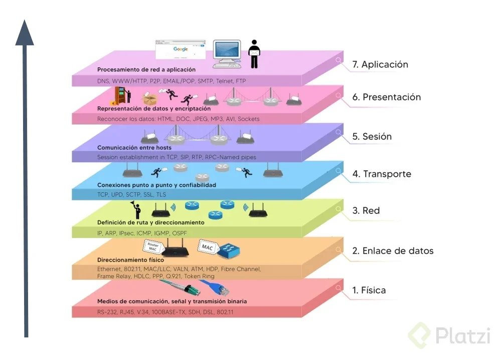
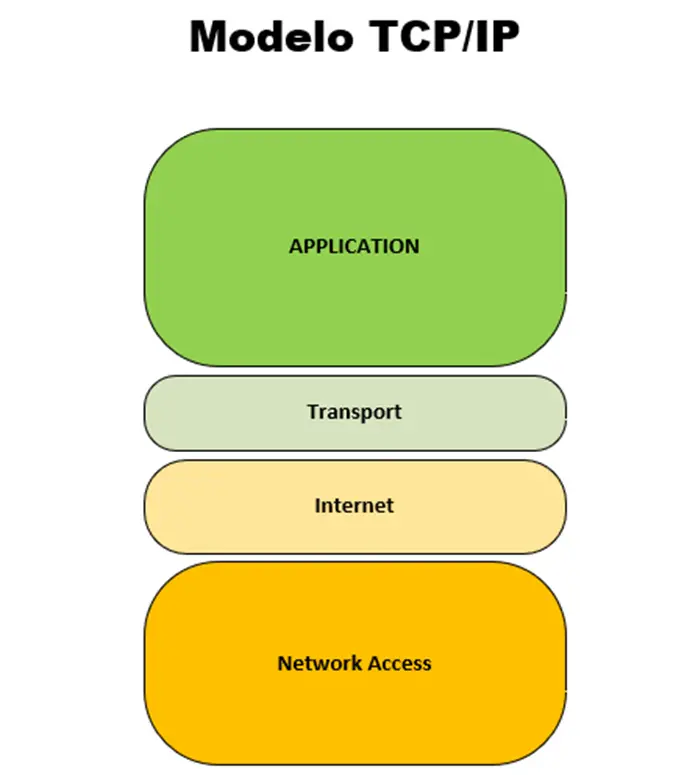
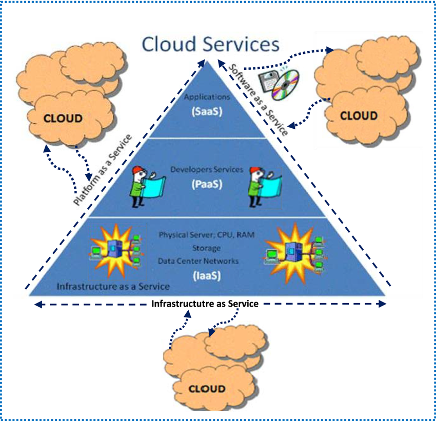

Modelos de Comunicación en Redes
Los modelos de comunicación en redes son esquemas que explican cómo se transmite la información entre
dispositivos dentro de una red. Su objetivo principal es estandarizar y facilitar la comunicación entre
diferentes sistemas, marcas y tecnologías.
Estos modelos dividen el proceso de comunicación en capas, donde cada capa tiene una función específica.
Esto ayuda a:
- Entender cómo fluye la información.
- Detectar errores y problemas en la red.
- Diseñar redes más eficientes y escalables.
- Lograr compatibilidad entre sistemas diferentes.
Modelo OSI: Las 7 Capas
El modelo OSI (Open Systems Interconnection) fue desarrollado por la ISO para estandarizar la comunicación entre computadoras. Divide el proceso en 7 capas, desde el software hasta el hardware.
| Nº | Capa | Función principal |
|---|---|---|
| 7 | Aplicación | Interacción con el usuario final (navegadores, correo, etc.). |
| 6 | Presentación | Traducción, compresión y cifrado de los datos. |
| 5 | Sesión | Establecimiento y control de sesiones entre aplicaciones. |
| 4 | Transporte | Entrega confiable de los datos (TCP, UDP). |
| 3 | Red | Encaminamiento y direccionamiento (IP, routers). |
| 2 | Enlace de datos | Organización en tramas, detección de errores, uso de direcciones MAC. |
| 1 | Física | Transmisión de bits por el medio físico (cables, ondas, señales). |
Modelo TCP/IP: Las 5 Capas
El modelo TCP/IP es el estándar de Internet actual. Es más simple y combina algunas funciones del modelo OSI.
| Nº | Capa | Función principal |
|---|---|---|
| 5 | Aplicación | Proporciona servicios de red a las aplicaciones del usuario. |
| 4 | Transporte | Transporte confiable (TCP) o rápido (UDP) de datos entre dispositivos. |
| 3 | Internet | Direccionamiento y enrutamiento de paquetes (protocolo IP). |
| 2 | Enlace de datos | Define cómo se envían los datos entre dispositivos en la misma red. |
| 1 | Física | Transmisión de bits físicos a través del medio de red (cable o inalámbrico). |
Capas de la Nube (Cloud Computing)
Con el crecimiento de Internet y los servicios en línea...
| Modelo | Nombre completo | ¿Qué ofrece? |
|---|---|---|
| SaaS | Software como Servicio | Aplicaciones completas listas para usarse (ej. Google Drive, Gmail). |
| PaaS | Plataforma como Servicio | Entorno para desarrollar, probar y desplegar aplicaciones (ej. Heroku). |
| IaaS | Infraestructura como Servicio | Recursos como servidores, almacenamiento y redes (ej. AWS EC2). |